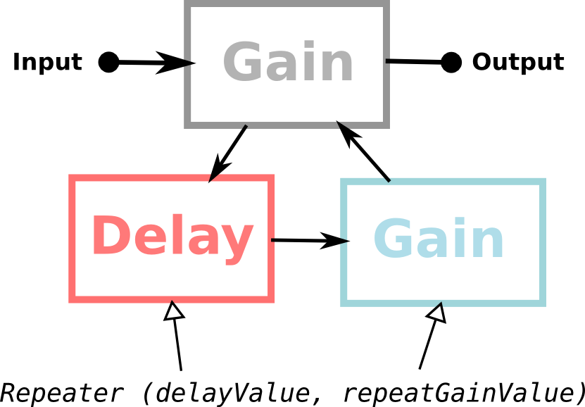

Waveform
Spectrum Analyzer
Spectrogram
Oscillator
var osc = ctx.createOscillator();
osc.type = "sine"; // "triangle" or "sawtooth" or "square"
osc.frequency = 440;
osc.start(0);
osc.connect(ctx.destination);
Oscillator Frequency Modulation

var carrier = ctx.createOscillator(); carrier.start(0);
var modulator = ctx.createOscillator(); modulator.start(0);
var modGain = ctx.createGain(); modGain.gain.value = 440;
modulator.connect(modGain);
modGain.connect(carrier.frequency);
carrier.connect(ctx.destination);
Oscillator Frequency Modulation
Envelope + Oscillator
QWERTY keyboard is used by default. try 'ZXCVBNM' and 'QWERTYU' keys. Black keys are also supported and you can change octaves with "." and "/" keys. use ?azerty=1 in the URL if you prefer AZERTY. MIDI keyboard is also supported! (today needs Chrome Canary with flags)
FM Oscillator + 2 envelopes
AudioBufferSourceNode
Filter
N.B. The Gain only works with lowshelf, highshelf and peaking. Also it is protected by a Compressor to not break your ears!
FM + Filter Cutoff LFO
Compressor
Noise + Filter
Delay effect example
"Repeater"
Convolution
You can find some Impulse Response on the internet (e.g. here), or you can record it yourself!